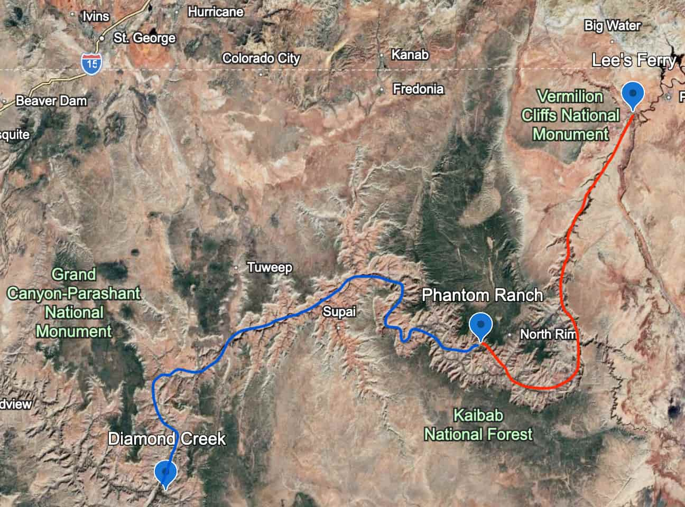
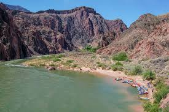
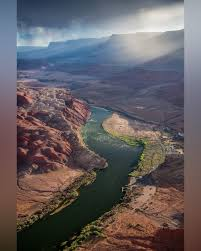
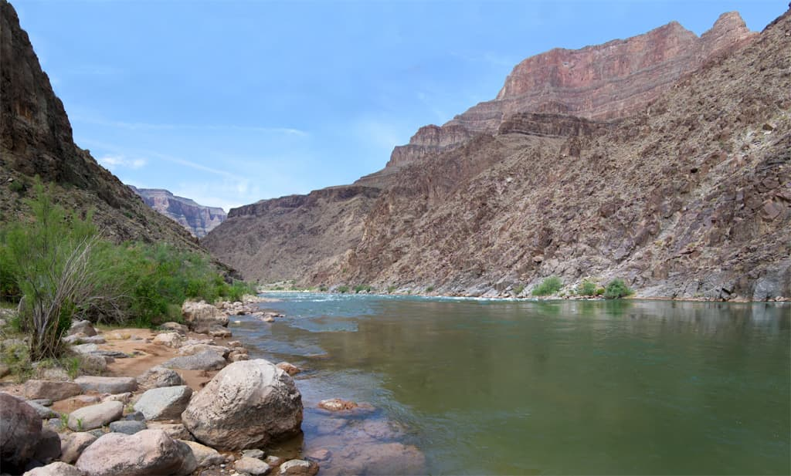

| Destination | Dates | Highlights | Cost |
|---|---|---|---|
| Full Canyon | Jul 6 - 22 | 280 miles of river; canyons and the best white water | $8,500 | Aug 3 - 19 | $8,500 | Aug 17 - Sep 2 | $8,500 |
| Upper Canyon | Jun 30 - Jul 5 | 100 miles of river; major rapids; South Rim Hike | $3,500 |
| Jul 14 - 19 | $3,500 | ||
| Jul 28 - Aug 2 | $3,500 | ||
| Aug 11 - 16 | $3,500 | ||
| Lower Canyon | Jul 7 - 13 | Bright Angel Hike & the best white water in the canyon | $4,500 |
| Jul 21 - 27 | $4,500 | ||
| Aug 4 - 10 | $4,500 | ||
| Aug 18 - 23 | $4,500 | ||
| End of Season | Sep 2 | ||
Trip Information Details

Upper Canyon -- red line Full Canyon -- red + blue Lower Canyon -- blue line

